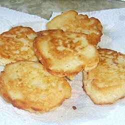

Fried Mashed Potato Cakes

Description
Mashed potato, mashed potatoes or mashed taters, colloquially known as mash, is a dish made by
mashing boiled potatoes, usually with added milk, butter, salt and pepper. It is generally served
as a side dish to meat or vegetables. When the potatoes are only roughly mashed, they are sometimes
called smashed potatoes.
Ingredients
- leftover mashed potatoes, cooled
- egg
- all-purpose flour
- vegetable oil
Steps
- Mix mashed potatoes, egg, flour, and salt together in a bowl.
- Heat a thin layer of vegetable oil in a frying pan. Drop large spoonfuls of the potato mixture
into the frying pan. Flatten into a patties as you flip; cook until browned on both sides,
6 to 7 minutes per cake. Repeat with remaining potato mixture.